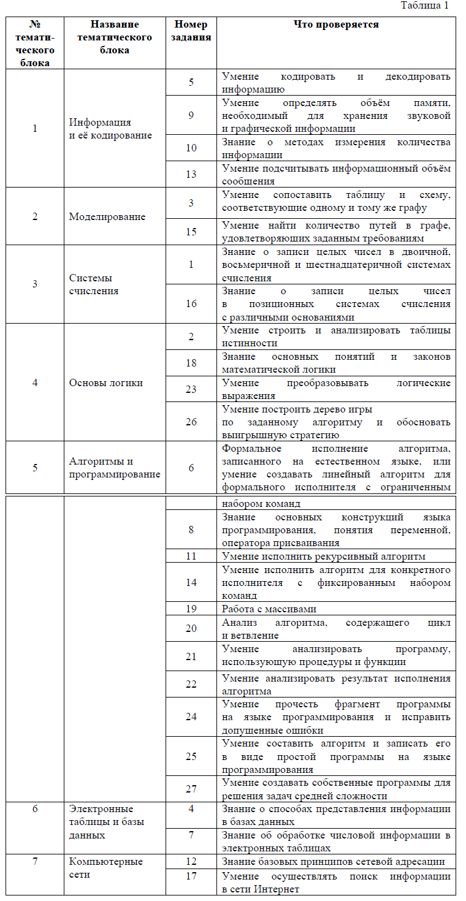
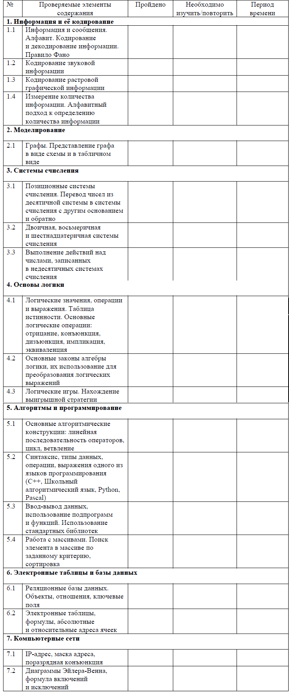
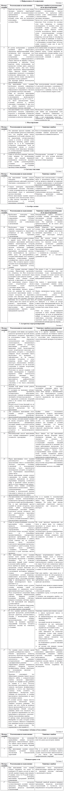

Индивидуальный план подготовки к экзамену
Распределение заданий по основным тематическим блокам курса информатики и ИКТ.
В таблице 1 представлено распределение заданий по основным тематическим блокам курса информатики и ИКТ.
На основании таблицы 1 можно составить индивидуальный план подготовки к экзамену, учитывая Ваш текущий уровень освоения учебного материала. Рекомендуем Вам прорешать тренировочный вариант ЕГЭ, например, демонстрационный вариант КИМ этого года или прошлых лет, открытые варианты и задания из Открытого банка заданий ЕГЭ, размещенного на официальном сайте ФГБНУ «ФИПИ» www.fipi.ru. Также можно воспользоваться различными сборниками вариантов, при этом следует обращать внимание на соответствие этих вариантов официальному демонстрационному варианту КИМ по структуре и тематике заданий. Если выполнение заданий по какой-либо теме вызвало затруднения, то на изучение / повторение соответствующей темы следует запланировать больше времени. Не следует изначально планировать себе слишком жёсткий график, который Вы вряд ли сможете выдержать, будьте реалистом.
В графах «Пройдено» и «Необходимо изучить / повторить» таблицы 2 отметьте не только прохождение соответствующего учебного материала, но и параграфы учебников или других учебных материалов, которые соответствуют нужной теме. Так Вы сформируете свой индивидуальный план подготовки к экзамену
Рассмотрим подробнее выполнение заданий каждого тематического блока экзаменационной работы и типичные ошибки, допущенные участниками ЕГЭ прошлых лет.
Рекомендуется следующая последовательность действий при подготовке к экзамену:
1. Провести самодиагностику, прорешав демонстрационный вариант КИМ, и самостоятельно проверить ответы, воспользовавшись эталонными ответами и критериями оценивания.
Если есть возможность работать в паре или группой, желательно всегда организовывать взаимную проверку развёрнутых ответов.
Цель – выявить собственные пробелы в знаниях, темы, вызвавшие затруднения, зафиксировать исходный уровень подготовки.
2. Заполнить индивидуальный план подготовки к экзамену и следовать ему.
3. При повторении каждой темы сначала выполнять задания по линиям, не менее чем по три-четыре задания каждого типа, встречающегося в линии, затем выполнять задания группами, относящимися к данной теме. После того как ошибки в выполнении заданий по данной теме сведены к минимуму, можно переходить к проработке следующей темы.
4. После завершения повторения всех тем следует прорешать ещё как минимум один вариант КИМ и сравнить результаты с п. 1. Также снова следует выявить темы и линии заданий, вызвавшие затруднения, и дополнительно их проработать.
При подготовке к экзамену по информатике и ИКТ могут быть полезны следующие ресурсы, ссылки на которые Вы можете найти в специализированном разделе сайта ФГБНУ «ФИПИ» или по ссылке http://fipi.ru/materials
1) ЕГЭ-2020. Информатика и ИКТ. Видеоконсультация. Министерство Просвещения Российской Федерации. Домашний час. Крылов С.С. Видеоконсультация
2) видеоконсультации по подготовке к ЕГЭ: 2017г., 2018 г., 2019 г.;
3) официальный информационный портал единого государственного экзамена ЕГЭ;
4) Открытый банк заданий ЕГЭ;
5) Кодификатор элементов содержания и требований к уровню подготовки выпускников образовательных организаций для проведения единого государственного экзамена, демонстрационный вариант КИМ ЕГЭ 2020 г. и спецификация КИМ для проведения ЕГЭ в 2020 г. по информатике и ИКТ